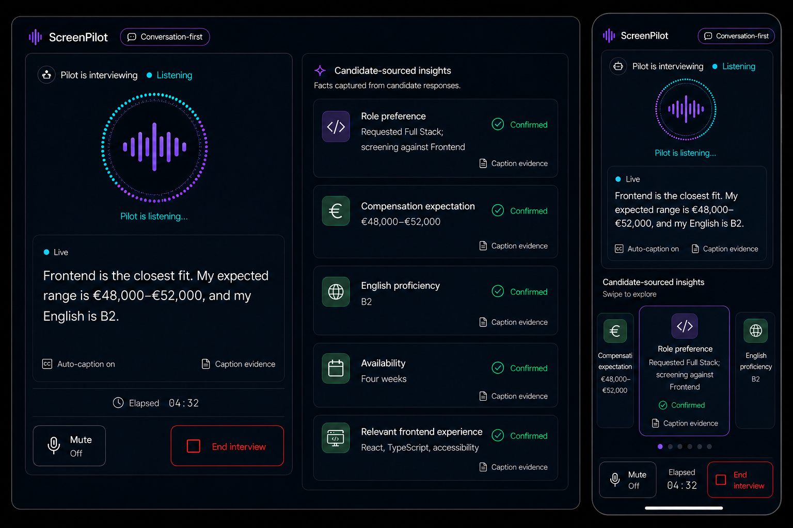

01 · Document surface
Structure emerges on quiet paper surfaces with borders doing most of the separation.
Living style guide · SP-004
Signal Canvas is ScreenPilot’s implementable visual language: a precise, transparent AI workspace that moves from a light document surface into a dark live signal field, then returns to a clear evidence review.
Structure emerges on quiet paper surfaces with borders doing most of the separation.
Voice activates in a dark canvas while facts crystallize into explicit, sourced cards.
The conversation settles into human-readable notes that support recruiter interpretation.
Exact core values are locked. Text/icon pairings below meet WCAG AA for normal text where a ratio is stated; violet uses ink foreground because white is only 4.38:1.
#070A12Full-height interview canvas.
#0D1220Elevated dark surfaces.
#F7F8FCLanding and review canvas.
#FFFFFFPrimary light cards.
#7C5CFCPrimary action and AI signal.
#35D4E7Listening and data accent.
#52D6A2Confirmed insight.
#F1B84BNeeds clarification.
#F06A8AError and end attention only.
#667085Secondary text on light.
Ink text on paper, slate secondary copy, violet for selected AI actions, and semantic color only when its label or icon is also present.
Paper text and muted blue-gray copy stay readable while cyan communicates live listening and mint confirms captured facts.
Geist Sans carries product language. Geist Mono appears only for compact timing, provenance, IDs, and technical metadata.
A clearer screen starts with a conversation.
What ScreenPilot will explore
We’ll confirm role direction during the call and keep every insight linked to its source.
Sans fallback: Geist Sans → Geist → Inter → UI/system sans. Display 56/60 desktop, 38/44 mobile · 600. Section 32/38 · 600. Card 15/20 · 600. Body 16/25 · 400. Metadata 12/18 · 500.
Pilot is listening
“Frontend is the closest match, but I’ve worked across the full stack.”
Mono fallback: Geist Mono → SFMono-Regular → Consolas → Liberation Mono → monospace. Use sparingly; do not set long labels in all caps.
Breakpoints respond to content pressure. They are verification anchors, not separate device themes.
1200 px system maximum; 720 px reading maximum. Large monitors add deliberate whitespace, not stretched copy.
16 px at 320–390, then fluidly expand up to 48 px. Controls and captions respect safe-area insets.
Compact metadata, comfortable body rhythm, and bounded cards. Never remove meaning to solve a narrow viewport.
| Reference | Width | Composition pressure to verify | Required continuity |
|---|---|---|---|
| Small phone | 320 px | Single-column cards, compact navigation, Turnstile fallback | No clipping, 44 px targets, full recovery copy |
| Standard phone | 360 / 390 px | Paired entry cards stack equally; insight rail | Same content, status, controls, and evidence meaning |
| Tablet | 768 / 820 px | Content-driven one/two-column transition | No awkward empty band or missing source relationship |
| Compact landscape | 1024 px | Readable density and operable controls | Portrait and landscape both remain complete |
| Desktop | 1280 / 1440 px | 42% conversation / 58% insight composition | Captions remain dominant and unobscured |
| Large monitor | 1920 / 2560+ px | Bounded reading widths and deliberate whitespace | Expand composition, not paragraph line length |
Soft elevation is reserved for hierarchy. Glass and gradients live only around selected AI atmosphere and the live overlay.
Nested radii step down. Do not apply the 28 px canvas radius to every element.
Icons improve scanning; they never carry hiring meaning or state by themselves.
aria-hidden="true".Every state stays explicit, actionable, and consistent across light and dark surfaces.
Actual keyboard focus is visible on each interactive example.
Labels and recovery text are never replaced by color.
Default · candidate stated
Focus-visible · cyan ring
Use a text-based PDF up to 5 MB.
Same prominence, complete explanation, non-competitive copy.
For a more focused screen grounded in the document you choose.
For the fastest, most open experience; ScreenPilot learns through conversation.
Provenance stays readable in every viewport.
“Built accessible interfaces using React and TypeScript.”
Source excerptConfirm timing and Remote-within-Europe constraints conversationally.
B2, candidate-stated. Language context is descriptive, not a score.
Caption · 02:14Icon + text + color; never color alone.
Candidate explicitly verified the information.
The evidence is incomplete or ambiguous.
The latest candidate statement replaces an earlier fact.
The blocking problem keeps a clear Retry or Back action.
The fallback reserves stable height and styles only ScreenPilot’s surrounding copy.
Your chosen entry mode is preserved. Retry preparation or return to the two choices.
It stays inline, keyboard reachable, and does not contact a paid provider until verification succeeds.
This coded pair follows the selected concept’s workspace framing, voice presence, vertical insight rhythm, caption containment, and mobile carousel. Exact tokens, semantics, focus behavior, and responsive rules remain explicit in HTML.
Pilot is listening…
Frontend is the closest fit. My expected range is €48,000–€52,000, and my English is B2.
Facts captured from candidate responses.
Requested Full Stack; screening against Frontend
€48,000–€52,000
B2
Four weeks
React, TypeScript, accessibility
Pilot is listening…
Frontend is the closest fit. My expected range is €48,000–€52,000, and my English is B2.
Swipe to explore
Requested Full Stack; screening against Frontend
ConfirmedCaption evidencefull-height field + centered bounded workspacedesktop: 42% conversation / 58% insightsmobile: signal → captions → insight rail → safe controlsstill atmosphere + localized signal/card motiondynamic viewport + safe-area insetsno horizontal page scrollImage-led composition · explicit HTML rules govern behavior and access

Spatial travel and pulsing disappear when reduced motion is requested. State, label, layout, and evidence remain.
This document honors prefers-reduced-motion: reduce for its voice, loading, scrolling, and insight demonstrations.
Semantic headings and landmarks, visible focus, 44 px targets, labelled insight states, readable captions, and stable inline recovery.
Hiring scores, decorative analytics, neon cyberpunk, robots, generic HR dashboards, hidden mobile features, excessive glow, and excessive glass.